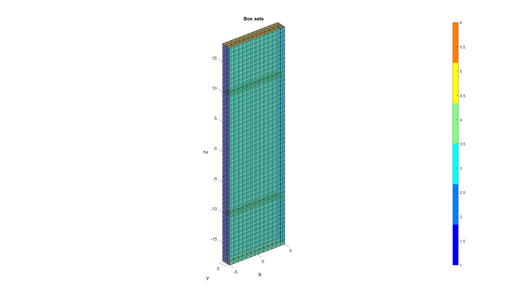
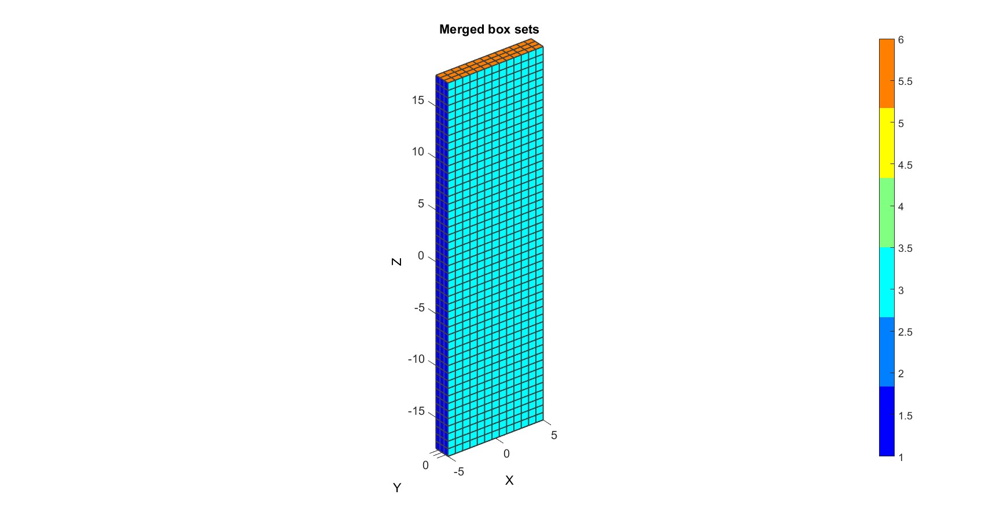
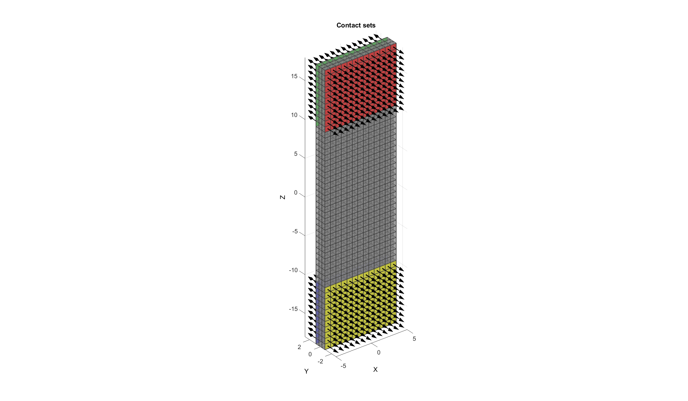
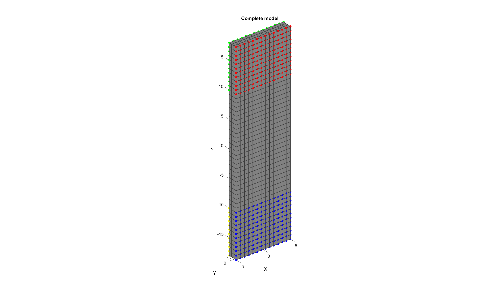

DEMO_FEBio_strip_multi_step_clamp
Below is a demonstration for: 1) The creation of an FEBio model for clamped tensile testing 2) The use of multiple steps 4) Running an FEBio job with MATLAB 5) Importing FEBio results into MATLAB
Contents
clear; close all; clc;
Plot settings
figColor='w'; figColorDef='white'; fontSize=15; faceAlpha1=0.5; faceAlpha2=1; edgeColor=0.25*ones(1,3); edgeWidth=1.5; markerSize=50;
Control parameters
% path names filePath=mfilename('fullpath'); savePath=fullfile(fileparts(filePath),'data','temp'); modelName=fullfile(savePath,'tempModel'); pointspacing=0.75; %Specifying dimensions and number of elements sampleWidth=10; numElementsWidth=round(sampleWidth/pointspacing); numElementsWidth=numElementsWidth+iseven(numElementsWidth); %Force uneven so there is a middle element elementSizeWidth=sampleWidth/numElementsWidth; sampleThickness=1.65; numElementsThickness=round(sampleThickness/pointspacing)+1; sampleGripGripHeight=20; numElementsGripGripHeight=round(sampleGripGripHeight/pointspacing); numElementsGripGripHeight=numElementsGripGripHeight+iseven(numElementsGripGripHeight); %Force uneven so there is a middle element sampleClampedHeight=8; numElementsClampedHeight=round(sampleClampedHeight/pointspacing); elementSizeClamped=sampleClampedHeight/numElementsClampedHeight; clampCompressiveStrain=0.375; clampCompressiveDisplacement=(sampleThickness.*clampCompressiveStrain)/2; tensileStretch=1.1; clampTensionDisplacement=(sampleGripGripHeight.*tensileStretch)-sampleGripGripHeight;
CREATING 3 MESHED BOXES
%Create box 1 boxDim=[sampleWidth sampleThickness sampleClampedHeight]; %Dimensions boxEl=[numElementsWidth numElementsThickness numElementsClampedHeight]; %Number of elements [box1]=hexMeshBox(boxDim,boxEl); E1=box1.E; V1=box1.V; F1=box1.F; Fb1=box1.Fb; faceBoundaryMarker1=box1.faceBoundaryMarker; %Create box 3 by copying the first E3=E1; V3=V1; F3=F1; Fb3=Fb1; faceBoundaryMarker3=faceBoundaryMarker1; %Shift first box up V1(:,3)=V1(:,3)+sampleGripGripHeight/2+sampleClampedHeight/2; %Shift third box down V3(:,3)=V3(:,3)-sampleGripGripHeight/2-sampleClampedHeight/2; %Create box 1 boxDim=[sampleWidth sampleThickness sampleGripGripHeight]; %Dimensions boxEl=[numElementsWidth numElementsThickness numElementsGripGripHeight]; %Number of elements [box2]=hexMeshBox(boxDim,boxEl); E2=box2.E; V2=box2.V; F2=box2.F; Fb2=box2.Fb; faceBoundaryMarker2=box2.faceBoundaryMarker;
Plotting surface models
hf=figuremax(figColor,figColorDef); title('Box sets','FontSize',fontSize); xlabel('X','FontSize',fontSize); ylabel('Y','FontSize',fontSize); zlabel('Z','FontSize',fontSize); hold on; patch('Faces',Fb1,'Vertices',V1,'FaceColor','flat','CData',faceBoundaryMarker1,'FaceAlpha',faceAlpha1,'lineWidth',edgeWidth,'edgeColor',edgeColor); patch('Faces',Fb2,'Vertices',V2,'FaceColor','flat','CData',faceBoundaryMarker2,'FaceAlpha',faceAlpha1,'lineWidth',edgeWidth,'edgeColor',edgeColor); patch('Faces',Fb3,'Vertices',V3,'FaceColor','flat','CData',faceBoundaryMarker3,'FaceAlpha',faceAlpha1,'lineWidth',edgeWidth,'edgeColor',edgeColor); colormap(jet(6)); colorbar; set(gca,'FontSize',fontSize); view(3); axis tight; axis equal; grid on; camlight headlight; drawnow;
MERGING BOX SETS
faceBoundaryMarker_all=[faceBoundaryMarker1; faceBoundaryMarker2; faceBoundaryMarker3;];
faceBoundaryMarker_ind=[ones(size(Fb1,1),1);2*ones(size(Fb2,1),1); 3*ones(size(Fb3,1),1);];
V=[V1;V2;V3];
E=[E1;E2+size(V1,1);E3+size(V1,1)+size(V2,1)];
F=[F1;F2+size(V1,1);F3+size(V1,1)+size(V2,1)];
Fb=[Fb1;Fb2+size(V1,1);Fb3+size(V1,1)+size(V2,1)];
[~,ind1,ind2]=unique(pround(V,5),'rows');
V=V(ind1,:);
E=ind2(E);
F=ind2(F);
Fb=ind2(Fb);
Plotting surface models
hf=figuremax(figColor,figColorDef); title('Merged box sets','FontSize',fontSize); xlabel('X','FontSize',fontSize); ylabel('Y','FontSize',fontSize); zlabel('Z','FontSize',fontSize); hold on; patch('Faces',Fb,'Vertices',V,'FaceColor','flat','CData',faceBoundaryMarker_all,'FaceAlpha',1,'lineWidth',edgeWidth,'edgeColor',edgeColor); colormap(jet(6)); colorbar; set(gca,'FontSize',fontSize); view(3); axis tight; axis equal; grid on; drawnow;
Define contact surfaces
logicContactSurf1=faceBoundaryMarker_all==3 & faceBoundaryMarker_ind==1; Fc1=Fb(logicContactSurf1,:); logicContactSurf2=faceBoundaryMarker_all==4 & faceBoundaryMarker_ind==1; Fc2=Fb(logicContactSurf2,:); logicContactSurf3=faceBoundaryMarker_all==4 & faceBoundaryMarker_ind==3; Fc3=Fb(logicContactSurf3,:); logicContactSurf4=faceBoundaryMarker_all==3 & faceBoundaryMarker_ind==3; Fc4=Fb(logicContactSurf4,:); % Plotting surface models hf=figuremax(figColor,figColorDef); title('Contact sets','FontSize',fontSize); xlabel('X','FontSize',fontSize); ylabel('Y','FontSize',fontSize); zlabel('Z','FontSize',fontSize); hold on; patch('Faces',F,'Vertices',V,'FaceColor',0.5*ones(1,3),'FaceAlpha',0.5,'lineWidth',edgeWidth,'edgeColor',edgeColor); patch('Faces',Fc1,'Vertices',V,'FaceColor','r','FaceAlpha',1,'lineWidth',edgeWidth,'edgeColor',edgeColor); [hp]=patchNormPlot(Fc1,V,2); patch('Faces',Fc2,'Vertices',V,'FaceColor','g','FaceAlpha',1,'lineWidth',edgeWidth,'edgeColor',edgeColor); [hp]=patchNormPlot(Fc2,V,2); patch('Faces',Fc3,'Vertices',V,'FaceColor','b','FaceAlpha',1,'lineWidth',edgeWidth,'edgeColor',edgeColor); [hp]=patchNormPlot(Fc3,V,2); patch('Faces',Fc4,'Vertices',V,'FaceColor','y','FaceAlpha',1,'lineWidth',edgeWidth,'edgeColor',edgeColor); [hp]=patchNormPlot(Fc4,V,2); set(gca,'FontSize',fontSize); view(3); axis tight; axis equal; grid on; drawnow;
Define BC's
bcPrescribeList1=unique(Fc1(:)); bcPrescribeMagnitudes11=zeros(numel(bcPrescribeList1),3); bcPrescribeMagnitudes11(:,2)=clampCompressiveDisplacement; %In step 1 bcPrescribeMagnitudes12=zeros(numel(bcPrescribeList1),3); bcPrescribeMagnitudes12(:,3)=clampTensionDisplacement; %In step 2 bcPrescribeList2=unique(Fc2(:)); bcPrescribeMagnitudes21=zeros(numel(bcPrescribeList2),3); bcPrescribeMagnitudes21(:,2)=-clampCompressiveDisplacement; %In step 1 bcPrescribeMagnitudes22=zeros(numel(bcPrescribeList2),3); bcPrescribeMagnitudes22(:,3)=clampTensionDisplacement; %In step 2 bcPrescribeList3=unique(Fc3(:)); bcPrescribeMagnitudes31=zeros(numel(bcPrescribeList3),3); bcPrescribeMagnitudes31(:,2)=-clampCompressiveDisplacement; %In step 1 bcPrescribeMagnitudes32=zeros(numel(bcPrescribeList3),3); bcPrescribeList4=unique(Fc4(:)); bcPrescribeMagnitudes41=zeros(numel(bcPrescribeList4),3); bcPrescribeMagnitudes41(:,2)=clampCompressiveDisplacement; %In step 1 bcPrescribeMagnitudes42=zeros(numel(bcPrescribeList4),3); %In step 2 % Plotting surface models hf=figuremax(figColor,figColorDef); title('Complete model','FontSize',fontSize); xlabel('X','FontSize',fontSize); ylabel('Y','FontSize',fontSize); zlabel('Z','FontSize',fontSize); hold on; patch('Faces',F,'Vertices',V,'FaceColor',0.5*ones(1,3),'FaceAlpha',1,'lineWidth',edgeWidth,'edgeColor',edgeColor); plotV(V(bcPrescribeList1,:),'r.','MarkerSize',25); plotV(V(bcPrescribeList2,:),'g.','MarkerSize',25); plotV(V(bcPrescribeList3,:),'y.','MarkerSize',25); plotV(V(bcPrescribeList4,:),'b.','MarkerSize',25); set(gca,'FontSize',fontSize); view(3); axis tight; axis equal; grid on; drawnow;
CONSTRUCTING FEB MODEL
% Defining file names FEB_struct.run_filename=[modelName,'.feb']; %FEB file name FEB_struct.run_logname=[modelName,'.txt']; %FEBio log file name %Creating FEB_struct FEB_struct.Geometry.Nodes=V; FEB_struct.Geometry.Elements={E}; %The element sets FEB_struct.Geometry.ElementType={'hex8'}; %The element types FEB_struct.Geometry.ElementMat={[ones(1,size(E,1))];}; %Adding fibre direction, construct local orthonormal basis vectors Vf_E=zeros(size(E,1),3); Vf_E(:,3)=1; %Z-axis fibres % Vf_E(:,1)=1; %X-axis fibres [a,d]=vectorOrthogonalPair(Vf_E); VF_E=nan(size(Vf_E,1),size(Vf_E,2),2); VF_E(:,:,1)=a; %a1 ~ e1 ~ X or first direction VF_E(:,:,2)=d; %a2 ~ e2 ~ Y or second direction %Vf_E %a3 ~ e3 ~ Z, third direction, or fibre direction FEB_struct.Geometry.ElementData.MatAxis.ElementIndices=(1:1:size(E,1)); FEB_struct.Geometry.ElementData.MatAxis.Basis=VF_E; % DEFINING MATERIALS % c1=1e-3; % k=c1*100; % Mat5.type='Mooney-Rivlin'; % Mat5.props={'c1','c2','k'}; % Mat5.vals={c1,0,k}; % Mat5.aniso_type='none'; c1=2.309; m1=9.421; ksi=22.499; beta=2.387; k=(0.5.*(c1+ksi))*100;% 20; Mat1.type='uncoupled solid mixture'; Mat11.type='Ogden'; Mat11.props={'c1','m1','k'}; Mat11.vals={c1,m1,k}; Mat11.aniso_type='none'; Mat12.type='fiber-exp-pow-uncoupled'; Mat12.props={'ksi','alpha','beta','theta','phi','k'}; Mat12.vals={ksi,1e-25,beta,0,0,k}; Mat12.aniso_type='none'; Mat1.Mats={Mat11 Mat12}; FEB_struct.Materials={Mat1}; %Step specific BC's FEB_struct.Step(1).Boundary.PrescribeList={bcPrescribeList1,bcPrescribeList1,bcPrescribeList1,... bcPrescribeList2,bcPrescribeList2,bcPrescribeList2,... bcPrescribeList3,bcPrescribeList3,bcPrescribeList3,... bcPrescribeList4,bcPrescribeList4,bcPrescribeList4}; FEB_struct.Step(1).Boundary.PrescribeType={'x','y','z','x','y','z','x','y','z','x','y','z'}; FEB_struct.Step(1).Boundary.PrescribeValues={bcPrescribeMagnitudes11(:,1),bcPrescribeMagnitudes11(:,2),bcPrescribeMagnitudes11(:,3),... bcPrescribeMagnitudes21(:,1),bcPrescribeMagnitudes21(:,2),bcPrescribeMagnitudes21(:,3),... bcPrescribeMagnitudes31(:,1),bcPrescribeMagnitudes31(:,2),bcPrescribeMagnitudes31(:,3),... bcPrescribeMagnitudes41(:,1),bcPrescribeMagnitudes41(:,2),bcPrescribeMagnitudes41(:,3)}; FEB_struct.Step(1).Boundary.PrescribeTypes={'relative','relative','relative','relative','relative','relative','relative','relative','relative','relative','relative','relative'}; FEB_struct.Step(1).Boundary.LoadCurveIds=ones(1,3*4); FEB_struct.Step(2).Boundary.PrescribeList={bcPrescribeList1,bcPrescribeList1,bcPrescribeList1,... bcPrescribeList2,bcPrescribeList2,bcPrescribeList2,... bcPrescribeList3,bcPrescribeList3,bcPrescribeList3,... bcPrescribeList4,bcPrescribeList4,bcPrescribeList4}; FEB_struct.Step(2).Boundary.PrescribeType={'x','y','z','x','y','z','x','y','z','x','y','z'}; FEB_struct.Step(2).Boundary.PrescribeValues={bcPrescribeMagnitudes12(:,1),bcPrescribeMagnitudes12(:,2),bcPrescribeMagnitudes12(:,3),... bcPrescribeMagnitudes22(:,1),bcPrescribeMagnitudes22(:,2),bcPrescribeMagnitudes22(:,3),... bcPrescribeMagnitudes32(:,1),bcPrescribeMagnitudes32(:,2),bcPrescribeMagnitudes32(:,3),... bcPrescribeMagnitudes42(:,1),bcPrescribeMagnitudes42(:,2),bcPrescribeMagnitudes42(:,3)}; FEB_struct.Step(2).Boundary.PrescribeTypes={'relative','relative','relative','relative','relative','relative','relative','relative','relative','relative','relative','relative'}; FEB_struct.Step(2).Boundary.LoadCurveIds=2*ones(1,3*4); %Step specific control sections FEB_struct.Step(1).Control.AnalysisType='static'; FEB_struct.Step(1).Control.Properties={'time_steps','step_size',... 'max_refs','max_ups',... 'dtol','etol','rtol','lstol'}; FEB_struct.Step(1).Control.Values={10,0.1,... 25,0,... 0.001,0.01,0,0.9}; FEB_struct.Step(1).Control.TimeStepperProperties={'dtmin','dtmax','max_retries','opt_iter','aggressiveness'}; FEB_struct.Step(1).Control.TimeStepperValues={1e-5, 0.1, 5, 5, 1}; FEB_struct.Step(2).Control=FEB_struct.Step(1).Control; %Adding output requests FEB_struct.Output.VarTypes={'displacement','stress','relative volume','shell thickness','contact force','reaction forces'}; %Specify log file output run_output_name_disp=[FEB_struct.run_filename(1:end-4),'_node_out.txt']; run_output_name_force=[FEB_struct.run_filename(1:end-4),'_force_out.txt']; FEB_struct.run_output_names={run_output_name_disp,run_output_name_force}; FEB_struct.output_types={'node_data','node_data'}; FEB_struct.data_types={'ux;uy;uz','Rx;Ry;Rz'}; %Load curves FEB_struct.LoadData.LoadCurves.id=[1 2]; FEB_struct.LoadData.LoadCurves.type={'linear','linear'}; FEB_struct.LoadData.LoadCurves.loadPoints={[0 0;1 1];[0 0;1 0;2 1];};
SAVING .FEB FILE
FEB_struct.disp_opt=0; %Display waitbars option
febStruct2febFile(FEB_struct);
%%%%%%%%%%%%%%%%%%%%%%%%%%%%%%%%%%%%%%%%%%%%% --- Writing FEBio XML object --- 23-Sep-2014 13:15:40 Adding Module level Adding Globals level Adding Material level
Reference to non-existent field 'Type'.
Error in addMaterialLevel_FEB (line 41)
switch currentMaterialStruct.Type
Error in febStruct2febFile (line 45)
docNode=addMaterialLevel_FEB(docNode,FEB_struct);
Error in DEMO_FEBio_strip_multi_step_clamp (line 319)
febStruct2febFile(FEB_struct);
RUNNING FEBIO JOB
% FEBioRunStruct.FEBioPath='C:\Progra~1\FEBio1p8\febio.exe'; % FEBioRunStruct.FEBioPath='C:\Progra~1\FEBio2p0\bin\FEBio2x64.exe'; FEBioRunStruct.run_filename=FEB_struct.run_filename; FEBioRunStruct.run_logname=FEB_struct.run_logname; FEBioRunStruct.disp_on=1; FEBioRunStruct.disp_log_on=1; FEBioRunStruct.t_check=0.25; %Time for checking log file (dont set too small) FEBioRunStruct.maxtpi=1e99; %Max analysis time %------------------------------------------------------------------- [rundFlag]=runMonitorFEBio(FEBioRunStruct);%START FEBio NOW!!!!!!!! %------------------------------------------------------------------
IMPORTING NODAL DISPLACEMENT RESULTS
Importing nodal displacements from a log file
[~, N_disp_mat,~]=importFEBio_logfile(FEB_struct.run_output_names{1}); %Nodal displacements
DN=N_disp_mat(:,2:end,end); %Final nodal displacements
CREATING NODE SET IN DEFORMED STATE
VT_def=V+DN; DN_magnitude=sqrt(sum(DN.^2,2));
IMPORT NODAL FORCE RESULTS
[~, N_force_mat,~]=importFEBio_logfile(FEB_struct.run_output_names{2}); %Nodal forces
FN=N_force_mat(:,2:end,end);
indForce=[bcPrescribeList1;bcPrescribeList2];
FN_sum=sum(FN(indForce,:),1);
A0=sampleThickness*sampleWidth;
cauchyUniaxial=(tensileStretch/A0)*FN_sum(3)
% ; %Final nodal displacements
Plotting the deformed model
[CF]=vertexToFaceMeasure(F,DN_magnitude); hf1=figuremax(figColor,figColorDef); title('The deformed model','FontSize',fontSize); xlabel('X','FontSize',fontSize); ylabel('Y','FontSize',fontSize); zlabel('Z','FontSize',fontSize); hold on; hps=patch('Faces',F,'Vertices',VT_def,'FaceColor','flat','CData',CF); view(3); axis tight; axis equal; grid on; colormap jet; colorbar; % camlight headlight; set(gca,'FontSize',fontSize); drawnow;

GIBBON
Kevin M. Moerman (kevinmoerman@hotmail.com)